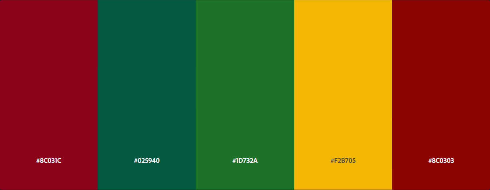

Ao longo das aulas de Análise Explolatória de Dados e Visualização, durante o primeiro semestre do curso de graduação em Ciência de Dados e Inteligência Artificial, fomos introduzidos a algumas maneiras de processamentos de imagens pelo computador.
A principal maneira com a qual os browsers se utilizam para gerar imagens se dá po um tipo de arquivo específico: o .svg . SVG é a abreviação para Scalable Vector Graphics, e tem como principal caracteristica, o processsamento das primitivas gráficas por vetores e não pixels, permitindo um "zoom infinito" na imagem.
De maneira a a aplicar os conceitos desenvolvidos em aula, nos foi proposto a constução de um arquivo svg para assim aplicar os conceitos desenvolvidos durante a aula. No entanto, haviam algumas restrições, como exemplo, a utilização de uma paleta de cores harmoniosa, com base em alguma pintura, ou com base no Adobe Colors.
Assim, podemos dividir a execução do trabalho em três:
O primeiro passo para a montagem do svg foi a escolha de uma obra. Como as figuras svg com os quais trabalhamos até o presente momento foram figuras relativamente simples, decidi escolher uma imagem simples, porém artística, de um movimento artístico chamado abstracionismo geométrico. O Abstracionismo Geométrico é um movimento artístico que valorizava a forma e cor, ao invés de objetos representativos, sendo assim, pe muito comum você observar quadros abstracionistas apenas com formas mais primitivas e cores primárias. Seu principal pensamento é que a arte deveria ser atemporal e não se basear em referências históricas ou culturais específicas. Podemos ver alguns exemplos de obras abstracionistas geométricas nas imagens abaixo, as quais são uma de Piet Mondrian (1872-1944) e Wassily Kandisky (1866-1944).
Para esse trabalho reproduzirei a obra do Mondrian
Para a reprodução das cores da obras, teremos que utilizar o adobe colors para descobrir as referências hexadecimais das cores utilizadas na obra feita por kandinsky. Para isso, basta utilizar a o imagem da obra e colocá-la na aba extrair tema. Após isso, teremos como resultado algumas paletas de cores utilizadas na obra. Podemos fazer algumas mudanças nas cores para obtermos algumas variações dentro da própria obra, uma ferramenta apresentada pelo próprio adobe colors, no qual podemos variar as combinações entre: colorido, brilho, suave, profundo e escuro . Para a ilustração da minha reprodução da obra, decidi escolher o tema profundo, e foi obtido a figura abaixo:

Tais cores são fortes, e permitirão dar destaque ao desenho.
Por fim, basta nos atentarmos que o desenho pode ser representado apenas por retângulos, de cores diferentes. Assim, basta escrever um arquivo svg com retângulos que imitem a obra. Após algumas tentativas chegamos no seguinte código:
<svg width="1000" height="700" xmlns="http://www.w3.org/2000/svg">
<!-- Desenhando o quadrado de fora -->
<polygon points="0 0 0 700 1000 700 1000 0" fill="white">
<!-- Desenhando as linhas horizontais -->
<line x1="0" x2="1000" y1="207.5" y2="207.5" stroke-width="15" stroke="black"/>
<line x1="0" x2="900" y1="407.5" y2="407.5" stroke="black" stroke-width="15"/>
<line x1="100" x2="1000" y1="557.5" y2="557.5" stroke="black" stroke-width="15" />
<!-- Desenhando as linhas verticais -->
<line x1="107.5" x2="107.5" y1="0" y2="700" stroke="black" stroke-width="15" />
<line x1="207.5" x2="207.5" y1="0" y2="700" stroke="black" stroke-width="15" />
<line x1="507.5" x2="507.5" y1="0" y2="700" stroke="black" stroke-width="15"/>
<line x1="607.5" x2="607.5" y1="0" y2="700" stroke="black" stroke-width="15" />
<line x1="807.5" x2="807.5" y1="0" y2="700" stroke="black" stroke-width="15" />
<line x1="907.5" x2="907.5" y1="0" y2="700" stroke="black" stroke-width="15" />
<!-- Colocando cores -->
<!-- verde -->
<rect x="215" y= "0" width="285" height="200" fill='#025940'/>
<rect x="615" y= "215" width="185" height="185" fill='#025940'/>
<rect x="115" y= "565" width="85" height="150" fill='#025940'/>
<!-- vermelho-->
<rect x="515" y= "0" width="285" height="200" fill='#8C0303'/>
<rect x="815" y= "215" width="85" height="185" fill='#8C0303'/>
<rect x="215" y= "415" width="385" height="135" fill='#8C0303'/>
<!-- amarelo -->
<rect x="115" y= "0" width="85" height="200" fill='#F2B705'/>
<rect x="815" y= "0" width="85" height="200" fill='#F2B705'/>
<rect x="815" y= "415" width="85" height="135" fill='#F2B705'/>
<rect x="215" y= "565" width="385" height="150" fill='#F2B705'/>
</svg>
O qual nos resulta no seguinte arquivo: